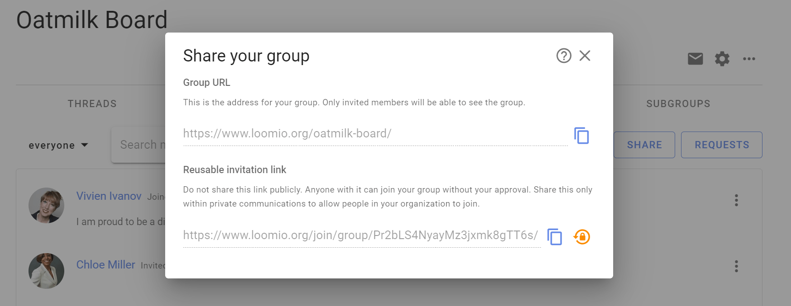
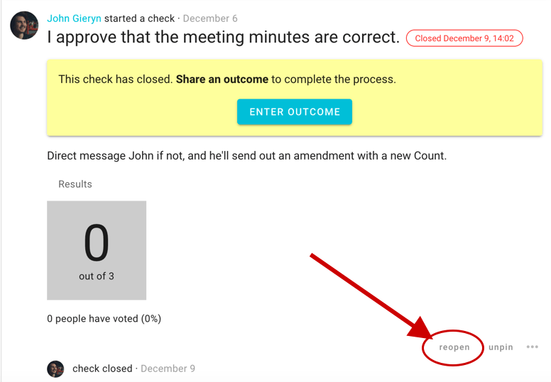
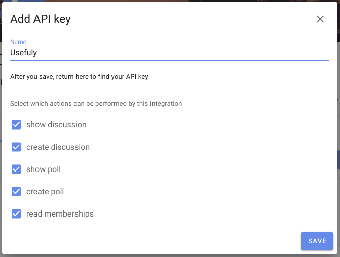
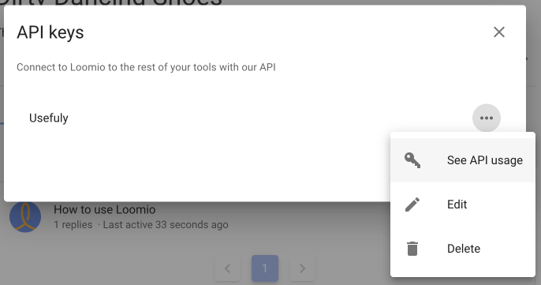

Overview
Loomio is a decision making tool for collaborative organizations.
It enables you to bring people together, have discussions on topics, explore proposals and make decisions.
It's a discussion forum with a set of tools to allow you to facilitate a discussion towards an outcome.
Watch this video for an intro to Loomio as we walk through how people use Loomio to make decisions, share news and events and prepare for meetings.
Loomio is often used by:
Boards and Governance to prepare for meetings, build an agenda, post board papers, vote on resolutions, approve minutes and continue governance between meetings. Helping your board stay in context and better able to respond.
Member organizations as a safe, inclusive space for members to share information and raise topics, interact and debate, participate in important decisions and General Assembly. Including members' voice to organize for action.
Self-managing teams to work together, share info and ideas, progress discussions, follow decision making processes and achieve better outcomes. Increasing staff satisfaction and productivity.
Loomio builds a living record of your organization; the decisions made, who was involved and the discussion they had together leading to the decision.
A quick tour of Loomio
Lets take an orientation tour to help you quickly understand how to participate in discussions and decisions in your group.
How Loomio works
Loomio is a simple structure of three main elements; Group, Thread and Decisions.
Group
A Loomio group is a safe place for your organization to meet, discuss and make decisions about work.

Group home
Your group home page is the first place you see when you arrive. It contains a title, an image to represent the group, and some text to introduce the group: its purpose, the work you will do, and any other information to help group members participate.
Thread
Threads are where you share information, discuss, and make decisions.

Threads are used for many purposes; to prepare for a meeting, discuss matters, share reports, ask questions, vote on proposals, approve actions, and so on. It's also where your group can develop a shared understanding of important issues.
Threads keep everything about a topic in one place. Over time you’ll create a useful archive of your organization’s discussions and decisions.
Polls
One of the best things about Loomio is its range of tools to progress a discussion to an outcome. Each poll type has a slightly different purpose. The most common one is a proposal.

A proposal is for converting a discussion into a clear, practical outcome. Someone suggests a course of action and invites everyone to respond. For example, you might ask group members to either:
- agree
- abstain or
- disagree.
Importantly, as well as selecting a response, everyone can give a reason why they have voted this way. You can all see where everyone else stands on the matter, and why. And then, if you want, you can change your response.
A proposal, and associated discussion, creates its own record of how the decision came about.
Putting it all together

The best way to learn what to use when is to have a go. Use your own group or start a demo group.
Group page
Your group home page is the first place people see when they arrive. It contains a description of why the group exists, what you will use it for, and any other information that may help you participate.
You can add an image that represents something of your organization and place.
Tabs
Under the group description you will see tabs. Clicking on each tab displays information about:
Threads - A list of discussion threads showing the author, the thread title, category tag, along with some other useful information about the recent activity in the thread.
Polls - A list of the polls and proposals active in your group.
Members - Where you can see a list of the people who are members of the group.
Files - Files and documents that have been uploaded to your group.
Subgroups - A list of subgroups that you are a member of. A subgroup is the collaborative space for a working team, project or event, a governance board, a subcommittee or stakeholders group.
Settings - Where administrators of the group can set and change group privacy and member permissions.
Below the tabs there is a search bar, with filters such as open or closed threads and category tags. The filters help you view a reduced set of information.
If the threads tab is selected, the thread list shows the title of the thread, author, number of replies, and when last active.
Sidebar
The sidebar menu is accessible from the (☰) menu icon at screen top left, where you can see:

- Dashboard - Open Polls and Proposals and recently active Threads.
- Unread threads - A list of Threads you have yet to read.
- Invite-only threads - Private Threads that do not belong to a group.
- Start a new thread - Where you can start a new private Thread.
- Your Loomio groups - Where you can easily find your Loomio groups and subgroups.
User settings
Click the down arrow ( ∨ ) to open your user settings.

The most useful settings when getting started are:
- Edit profile - Where you can edit name, email address, upload your photo, introduce yourself, add your location.
- Notification settings - Set what emails you want to receive from Loomio.
- Help - Access Loomio Help documentation.
- Contact support - Where you can connect with the Loomio customer support team.
Notifications
In app notifications
The bell icon in the top-right is where notifications are accessed within Loomio.

Email notifications
Loomio sends emails to keep you updated on the activity in your groups.
Emails Loomio may send you include:
- Mention and Replies - When someone @mentions you in a comment or replies to you, you will receive a notification email.
- Subscribe on participation - If selected, when you participate in a thread you will receive emails for all further activity. Not recommended for most people.
- Catch-up summary email - The 'Yesterday on Loomio' email includes activity from all your groups and threads that you have not read yet.
- Invitations to threads, polls and proposals - You may receive an email when invited to a new thread, poll or proposal.
- Reminders and Outcomes - If you have not voted in a poll or proposal, you may receive a reminder 24 hours before close. You may also receive an email stating the outcome of a poll or proposal.
These emails are to help you participate effectively with your group. The default settings are to help you stay up to date with activity on Loomio but should not overload your email inbox.
If you are receiving too many emails from Loomio, you can change the default email settings. Talk to your group administrator to get the balance right for you.


When you receive an email from Loomio, you can reply directly from your email inbox and your reply will be posted into the Loomio thread. This works for everything except the Catch-up summary email.
Finding Information Quickly
There are several tools included within Loomio to help you find the information you are looking for quickly.
Search
You can use the Search bar at the top of almost every page to search for content relevant to that page.
For example, on the Threads page typing 'decision' in the search bar brings up two threads with the work 'decision'.

Category Tags
Category Tags make it easy to find threads of a certain type or topic.
Tags can be applied when starting or editing a Thread, Poll or Proposal.

Thread page
From your group page, click on a thread to read the thread.

The thread title is prominent, and you can see thread content and comments from other members.
The thread page includes everything you need to know about the thread;
- the group name, and subgroup name, that the thread belongs to
- category tags applied to the thread
- author and thread privacy
- Seen by to see who has seen the thread
- Notified to see who has been notified
- comments, replies, reactions and any polls
- timeline of key events in the thread, such as polls or proposals
Thread context
The thread context is used to introduce the topic. It will often include background information, attached files or links to online documents, to help you participate in the discussion - just as you would attach a file to an email. The context always stays at the top of the thread.

Thread activity
Seen by shows who has read the thread, and when.

Notified shows who has been notified about the thread, and if read or email opened.

Comments
As you scroll down the thread page, you will see comments and replies from other group members.

Timeline
The thread timeline builds with key activity in the threads. Use timeline to quickly go to decisions or important comments pinned to the timeline.

Poll page
From your group page, select the POLLS tab to see your list of polls and proposals. Alongside the poll name, there is an active icon that changes as the poll progresses, and indicates your vote.

Signing in to Loomio
On this page
- Create new user account
- Sign in on phone or tablet
- Returning to Loomio
- Add Loomio to your phone home screen
- Troubleshooting
Create new user account
The first time you visit Loomio you will go through a short process to set up a Loomio user account.
You won’t need a password and your computer will remember you in future.
Loomio user accounts are identified by email address
You will need to provide an email address to make sure your Loomio user account is yours.
- Tip: Use an email address that is uniquely yours, so other group members will easily recognize you and know that your comments are from you. To avoid confusion, do not use shared and role based email addresses like info@... or ceo@... where more than one person can access the account.
If you have any problem signing in to Loomio, you can always regain access with the email address you used when you set up your Loomio account.
Invitation via email
You may receive an invitation to join a Loomio group via your email inbox:

Click the Accept invitation button at the centre of the email.
The link will take you to the internet browser on your computer, tablet or phone and open a page where you are invited to create an account.

Type in your email address and click the CONTINUE WITH EMAIL button.
Alternatively, you can sign in with your Google account.
You will be taken to a page to create your Loomio user account.

Type in your name, so people in your group will recognise you.
Tick the check boxes to accept Loomio Terms of Service and Privacy Policy. Click on the links to read these important documents which govern your use of Loomio.
Tick the second box if you would like to receive our newsletter.
When ready, click the CREATE ACCOUNT button at the bottom right hand corner of the screen.
Loomio will send an email to your email address with a 6 digit code. This is required to confirm you own your email address.

Go to your email inbox and open the email from Loomio with subject 'Sign in to Loomio'.
Copy the code from that email, go back to your internet browser screen and enter the code.
Click SIGN IN to go to your new Loomio user account.
That's it! You should now have an active Loomio user account and able to participate in your Loomio group.
When you return to Loomio, in most cases you browser will remember you and automatically sign you in.
However if you have reset your computer or are accessing Loomio from another device, you will be need to sign in again. The simplest way to do this is to sign in via email and follow the prompts.
Sign in on phone or tablet
If you use your phone to access Loomio, the sign in process is very similar.
An invitation via email to participate in a Loomio group will look something like this:

The email subject line shows the name of the person inviting you and the group name on Loomio.
In the email body, you will see the group image and logo, and a message from the person who has sent the invitation.
Tap the Accept invitation button.
If you have not previously signed into Loomio on your phone browser, you will be asked to sign in.
Type in your email address and tap CONTINUE WITH EMAIL.

On the next page tap SIGN IN VIA EMAIL.

Loomio will send an email to your email address with a 6 digit code.

Go to your email inbox and open the email from Loomio with subject 'Sign in to Loomio'.
If the email does not arrive soon, check your spam folder.
Copy the code from that email, go back to your internet browser screen and enter the code.

Tap SIGN IN.
The next time you receive an email from Loomio, just tap on the thread or decision title. Your phone browser should remember you and take you straight in to Loomio.
Returning to Loomio
You can sign in with any notification email from Loomio, including; the 'Yesterday on Loomio' daily summary email, a thread invitation, or an invitation to vote.
For example:

If you have previously signed in to Loomio you can:
-
Tap on the thread title (the large colored text) to go to Loomio.
-
Reply to the email as you would with any other email, and your comment will automatically go into the thread.
-
Click on the link at the bottom of the email 'view it on Loomio'.
If you are not signed into Loomio, you will be asked to sign in.
Returning to Loomio after some time
If you are returning to Loomio after some time, or signing in to Loomio on a new device, you may need to sign in again.
You can sign in to Loomio from our website at loomio.com with Sign in or by going directly to the Loomio service you are using; loomio.org, loomio.eu or loomio.nz.

Remember to enter the email address you used when you set up your Loomio account:
- Type in your email address and tap CONTINUE WITH EMAIL.
- On the next page tap SIGN IN VIA EMAIL. Loomio will send an email to your email address with a 6 digit code.
- Go to your email inbox and open the email from Loomio with subject 'Sign in to Loomio'.
- Copy the code from that email, go back to your internet browser screen and enter the code.
- Tap SIGN IN.
Add Loomio to your phone home screen
Loomio is a mobile optimized web app and you can add the Loomio icon to your phone home screen.
Follow the instructions below to add a shortcut to Loomio on the home screen of your iPad, iPhone, or Android devices.
iPhone or iPad
Launch “Safari” app. (This does not work from the “Chrome” app.)
Go to loomio.org/dashboard.
Tap the 'Share' icon (it has an arrow coming out of a box) to open the share menu.

Find and tap “Add to Home Screen.” The Add to Home box will appear, with Loomio icon and name.

Tap “Add.” Safari will close and the Loomio icon will appear on your home screen.

Android
Launch “Chrome” app.
Go to loomio.org/dashboard.
Tap the menu icon (3 dots in upper right-hand corner) and tap Add to homescreen.
The Loomio icon will appear on your home screen.
Tap the Loomio icon on your homescreen to open Loomio
The first time you do this, you will need to sign in to Loomio.
- Enter your email address and tap 'CONTINUE WITH EMAIL'
- Tap 'SIGN IN VIA EMAIL'
- Check your email and type in the 6 digit code. Tap 'SIGN IN'
You will be taken directly to Loomio where you can read and participate with your group as usual.
Loomio will remember you, so you will be automatically signed in the next time you visit.
Troubleshooting
I can't access Loomio
Loomio is a web app, accessible via popular web browsers such as Chrome, MS Edge, Firefox or Safari.
- Check your browser is updated to a current version for best security and performance.
Sometimes IT systems block untrusted website addresses. Loomio is open source software and does not download any software to your computer or device.
- Check your IT system is not blocking loomio.org and loomio.com domains.
- IT may need to unblock access to Loomio, and add loomio.org to their ‘allow list’ or ‘white list’.
I can't receive emails from Loomio
Loomio uses your email address for user authentication. Notifications of new threads, decisions and other activity in Loomio are sent to your email address.
- Check your IT system is not blocking emails from @loomio.org
- IT may need to unblock emails from Loomio and add @loomio.org to their ‘allow list’ or ‘white list’.
- If IT refuses to budge, can you use a personal email address?
I can't see any of my groups!
To fix this: Sign out then sign in again with the email address you normally use Loomio with.
Why does this happen? This can happen because you participated in a poll when you were not signed in; Loomio creates a guest user, so you can participate without signing in. When you sign in later, we confirm the authenticity of your vote and connect it to your registered user.
Every time I visit Loomio I have to sign in!
Ensure your browser is not deleting cookies. If you find that you're logged out of Loomio every time you visit, your browser may be configured to delete cookies when you close the browser window. Cookies are the way we recognize you when you use Loomio, so deleting them means you need to identify yourself (ie: sign in) every time you visit.
Here are screenshots of what correct cookie settings look like:
Chrome cookie settings

Firefox cookie settings

Safari cookie settings

How to participate
On this page
Comment
You can write a Comment in a Thread, and people can reply, react or post their own comment to continue the discussion.
When you have written your text as a Comment in the thread, use Post Comment to instantly publish the comment. Your comment will be visible to anyone who has permission to see the thread. If you want to change anything you can edit the comment.

Get someone's attention with @mention
You can notify people when you write a comment.

Reply to a comment
You can reply to someone's comment. Your reply is published in the thread and an email is sent to the author of the comment.

Reactions
Reacting to a comment is a great way to encourage and acknowledge a comment by letting the comment author know how you feel. It is a quick and light-weight way to participate that does not require any text, nor send an email.

Vote
You may receive an invitation to vote via email or by notification in Loomio. Click on the link to have your say.
Voting in a Proposal or Poll is easy, just click or tap on the icon of your choice.
You can vote to Agree, Abstain or Disagree to the proposal. Other options may be available.

State a reason
When voting, you can also leave a Reason to say why you have voted this way. This is optional.

Up until the proposal closes, you can change your vote.
There are many reasons why you might want to change your vote. For example if new information emerges it may cause you to rethink your decision, and change your vote.
Changing your vote
You can change your vote, up until the proposal closes.

There are many reasons why you might want to change your vote. For example if new information emerges it may cause you to rethink your decision, and change your vote.
Once again, you can leave a reason - to say why you have changed your vote.
Results
Results of the proposal are updated as people vote, so you can see how a proposal is trending.

In a controversial proposal it is common to see mixed results, however this does not mean the proposal has failed.
Often the new information revealed during the proposal helps form a better proposal that is more likely to pass.
Outcome
When the proposal closes, the author is prompted to state the Outcome.
This is an important final step to record the result of the decision and let everyone know what will happen next.

Intro to Groups
A Loomio group is a safe place for people to meet, have discussions and make decisions.
It’s a container where group members can find and share information, participate in important discussions and decisions that affect their work.
A Loomio group looks like this. At the top of the page you will see an image and logo that you can tailor to represent your organization. This allows people arriving into your group to see they have joined a place they recognize and feel welcome - a safe space where people feel at home, amongst friends and can participate effectively.

Choose a representative name for your group and use the group description to outline;
- what this group is used for,
- why this is important,
- who is involved, and
- how members can participate.
You may also include information like a code of conduct, terms of reference or other governing documents for the group.
Starting a new group
If you are new to Loomio, you can start a group on a free trial at any time from the Loomio website.
For many organizations, a single Loomio group is sufficient. You can start as many subgroups as you need within the group. See Subgroups for more info.
If you already use Loomio and would like to start a new group for another organization or purpose, you can do this from the sidebar menu - click on New group.
A new Loomio group starts a new free trial and you will be invited to upgrade the trial to a paid subscription.
Pro plan customers have more than one group included with the Pro subscription. Contact us to connect your new group to your Pro plan subscription.

Group details

Group name
Type your group name. It's best to keep your group name short and concise.
Group handle
Your group is automatically assigned a 'handle'. This provides a simplified url address for your group that can help you find your group, and that you can share with people to help them find your group.
The simplied url address for your group is loomio.org/your-group-handle.
You can edit the handle.
Category selection
You may be asked to select a category that best describes your group. This helps us help you with relevant information.
When you click 'Start Group' your new group is automatically created!
Group Settings
Configuring your Loomio group.
In group settings you can change group name, add a group description, upload a photo or image for your group, change group privacy and member permissions, and set thread view default. Only people who are 'admin' can see and edit group settings.
On your group page, find and click on the Edit group settings cogwheel icon to open Group settings and use the form that appears (click save when done).

Group profile
Upload a group photo
Uploading a photo or image that has some meaning to your group significantly improves the sense of belonging. You can also add a logo which will appear alongside your group name in the sidebar menu. Click on the image and logo to upload your file.
The ideal pixel resolution for the group image is 2048 x 512. But any image with aspect ratio of 4:1 will fit.

You can also upload your logo icon, which will appear alongside your organization or group name in the sidebar menu.
Change group name
You can edit the name for your organization or group. We recommend short names, particularly if you plan to use subgroups.
Handle
Your group is automatically assigned a 'handle'. This provides a simplified url address for your group that can help you find your group, and that you can share with people to help them find your group.
The simplied url address for your group is loomio.org/your-group-handle.
You can edit the handle.
Group description
In the Group description box think about the people you are inviting and write something about:
What you will use Loomio for.
- The purpose of the group.
- The work you are going to do.
- What you hope to achieve.
Why this work is important.
- Why people should participate.
Who is invited into this work.
How to participate.
- What you expect of group members.
- How you see Loomio will complement your usual processes.
- An outline or attach the Terms of Reference, Code of Conduct or other doc that governs the group.
For example;
We use Loomio to discuss and make decisions about issues, work priorities and plans, prepare for meetings, and collaborate on strategic documents.
We need a safe and private space for discussion, to share knowledge, perspective and wisdom, and to help us make good decisions together. Loomio will help us stay up to date, be involved and work together more effectively to achieve our objectives.
This is a private group for our working team. You are invited to contribute in threads, vote in proposals and raise new topics by starting a new thread.
We will use Loomio to prepare for meetings and agree agenda items, upload draft papers and documents, agree actions, approve minutes, and progress discussions on issues we do not have time to cover during meetings."
Use the formatting tools to format text, attach documents, add hyperlinks, and embed a video.
Privacy
Go to the Settings tab on your group page. Click Edit Group Settings and go to the Privacy tab. Click Update Settings when done.

Your privacy settings determine who can find your group, who can see the threads in your group, and how people join.
The recommended privacy setting for new groups is Secret. This means everything is private to those invited members of the group. No one will know about this group (or subgroup) unless you invite them.
If you want the content of your discussions and decisions to be public, change your group privacy to Open. The members list will only be visible to other members.
Many groups use Closed to allow people to find the group and request to join. The Name and Group description are publicly accessible in Closed groups.
Open groups may contain secret and closed subgroups.
A member of an open group can see the closed subgroup but not the secret ones.
Permissions
Most of the permissions settings only affect what members can do. Members are the users in your group who are not Admins.

Anyone can join (Open groups)
In open groups you can use the option, Anyone can join, in order for the public to be able to join without any action by any member of the group.
Requiring approval of membership requests (Open groups)
If you select this option, rather than letting people walk in the door voluntarily (self-select to join your group), then admin will have the option to approve or ignore people's requests to join.
- You can also give group members the permission to approve requests, also in the Permissions tab of Group Settings.
Allow members of parent group to see threads
In closed subgroups you can allow members of the parent group to see discussions within the subgroup. Select, Members of [parent group] can see private threads to enable this feature. This feature is off by default. For more on subgroups, see here.
Members can invite people and approve requests to join
This allows everyone in your group to invite new people in, and approve any membership requests. When it is deselected only group admin will be able to invite and approve new members.
Members can notify everyone in group
When ticked, any Member will be able to use notify and invite people, sending notifications immediately to some, or all, of the group. Unless your group is very big, Loomio recommends you leave this on.
Create subgroups
This allows everyone in your group to create subgroups. When it is deselected only group admin will be able to create subgroups.
Start threads
This allows everyone in your group to start new threads. When it is deselected only group admin will be able to start discussions.
Edit the context of any thread in the group
This allows everyone in your group to edit the context of any thread. When it is deselected only group admin and the thread author will be able to edit the thread context.
Edit their comments at any time
This allows everyone in your group to edit their comments at any time. When it is deselected, a comment can only be edited until someone else participates in the thread.
Raise proposals
This allows anyone in your group to start a proposal within a thread. When this box is deselected only group admin will be able to raise proposals and polls.
Vote on proposals
This allows everyone in your group to state their position on proposals. When it is deselected only group admin will be able to state their position on proposals and polls.
Thread view settings
Thread activity is comprised of all the comments, replies, proposals, polls, votes and other notable things that happen within the thread. You can alter how that activity is displayed in order to optimize the experience for your group. These settings change the default layout for everyone in your group, but can be adjusted for each thread to serve a specific purpose:

Oldest or Newest first
By default, threads are set to Oldest listed with the oldest activity nearest the top. You can change the thread flow by switching to Newest so that the newest activity is at the top of the thread.
Flat or Nested replies
The thread can also be set to display chronologically, as a flat list, where all activity is displayed in the order that it happened, or as nested replies of one or two levels.
Nested replies keeps replies to comments together, and is very helpful to easily see mini-discussions within an overall thread.
Click Save to exit.
Inviting people
How to invite people and manage group membership.
Inviting people to join your Loomio group is a critical step to success - however everyone is busy; many people are reluctant to try a new tool and can be slow to respond to your invitation.
Loomio includes tools to help you invite people; but you may also need to reach out to members by phone, text, chat or in a meeting, to tell them why you are using Loomio. If your group members resonate with this, it will encourage them to give it a go.
For example, your group might need:
- a safe space where members can find all the info they need and participate in their own time
- to stay in touch and respond to issues that come up between meetings
- to progress discussions and make decisions as needed
- to have better meetings and focus precious meeting time on issues that matter
If you're still having trouble with people not accepting your invitation:
- Re-send your invitation.
- Invite them to a particular thread or poll using their email address (so they can see that things are happening). Their email reply or vote will appear in Loomio.
- Record a short video of yourself on your phone, Zoom or Loom and send this with your invitation; so people can see that you're a real person, the importance of the work, your enthusiasm and passion, and to encourage them to join in :-)
Invite people
Go to your group page and click the Members tab to access member management
You can Invite particular people to your group with their email address or Share a link to your group via email, newsletter, chat or from your website.
Invite people via their email
Click Invite on the Member tab of your group page to send an email invitation with a single-use link to a person's email address. The recipient is invited to create a Loomio user account and join your group.
If the recipient already has a Loomio user account they can still accept the invitation to join your group with their existing account.

Invite many at once
You can send invitations by email to up to 100 people at a time by entering (or copy/pasting) multiple email addresses into the "Who would you like to invite" box. Separate email addresses by comma or space.
- Tip: Copy email addresses from a column in a Google or Excel spreadsheet, and paste into the invitation box.
When you click Invite) an email will be sent to each of the email addresses you supplied, containing a unique invitation link that can only be used once. This email will be sent in your current language.
Invite people to Subgroups
Following the same process as above, you can invite people to a 'parent' group, and one or more subgroups simultaneously when you invite them with the Invite people button. Tick the boxes next to the subgroups you want them to immediately be a part of when they join the group.
Share a link to your group
You can share a link to your group with the Share button. This is useful if you want to send a link via email, newsletter, chat or post on your website.
Two options are provided:
Group URL is the address for your group. Only invited members will be able to see the group. Useful to remind people that you have previously invited.
Reusable invitation link will allow anyone with the link to join your group without your approval. Share this only within private communications to allow people in your organization to join.
Click on the "copy" icon to copy the link to your clipboard, then paste in your email, newsletter or chat channel.

Allow people to "Request to Join"
If your group's privacy is Closed then you can share your group URL ie: www.loomio.org/group-name. When people arrive at your group page, they will see the group title and description, and a button Join group where they can request membership. Group admins will receive an email where you can approve or deny the request to join.
Managing invitations
To manage invitations, open the filter/ drop down from the Members tab of your Group page and select Invitations; click on the three dot menu to the right of the member invitation.
You can also make people administrators or set their title (e.g. "IT Support") within the group before they accept their invitation.
Re-send invitations
Follow up on people who don't make it into the group and give them a nudge. If someone has lost or forgotten about their invitation email, you can re-send it from the dropdown menu beside their name on the Members page.
Click on the three dots (⋮) next to the person you want to resend the invitation to, and then choose Resend invitation.
Encourage people to particiapte
If people join but don't begin to participate right away, you might like to welcome them to the group with an @mention, for example:
“Welcome to the group @Jane :) It's great to have you here! Would you saying a little bit about your work in this space?”

Cancelling invitations
If you entered the wrong email address, or have changed your mind about inviting someone, you can cancel an invitation from the Members tab on your Group page. Select Cancel Invitation from the drop down menu to the right of the member invitation (⋮).

Member management
Manage members from the Members tab on your Group page.
Click on the three dots (⋮) to the right of the group member you wish to Set title, Make admin or Demote admin, or Remove from group.
Admin
There are only two user types in a Loomio group; member and admin.
Admins perform administrative tasks for your group including; add and remove members, grant and remove admin permissions, change group privacy and member permission settings, upgrade and manage subscription plans.
The person creating a new Loomio group is made admin by default. We recommend to make at least one other person in your group admin, to insure someone can always administer your group.
Admins are people you trust to administer your group. You can have as many admins in your group as you wish.
To make a member admin, go to the Members tab, find the member and click on the three dots (⋮) next to their name. Choose Make admin. An Admin tag will appear beside their name.
Managing subgroups
If you are the admin of a parent group, or organization, you have additional permissions with regards to any closed subgroups.
You will be able to join any closed subgroup by clicking the "Join Group" button on the left of the Subgroup page in question (just under the tabs).

Once you have joined the subgroup, you will also be able to make yourself the admin of that subgroup, just as you would promote anyone to admin (see above).
Note: these permissions do not extend to secret subgroups.
Removing group members
When you click Remove from group you'll be asked to confirm the removal. Upon removal, this user will no longer have access to the group's pages, threads, polls, or proposals. They will receive no further emails or notifications of group activity. However, any comments and votes written by the user will remain untouched.

After you have removed someone from the group, you can add them back to the group later if you wish.
Leaving a group
To leave a group go to the Group page's Settings tab and click Leave group.

Assigning titles
You can name the role someone has within the group, or identify which organization they represent using the title feature. You or an admin can change yours by clicking set title from the dropdown near your name in the desired group's Members tab.

You can even have different titles in different subgroups.
Membership requests
If your group's advanced settings allow people to join your group by request, an admin will need to approve each membership request. Group coordinators will receive an email each time there is a new membership request. The link in the notification email will take you to the Requests page, where you can approve or decline the request.
To find pending requests for memberships, navigate to the Members tab of your Group page and click the Requests button on the right.

Category Tags
Category tags make it easy to find threads of a certain type or topic.
On your group page, click on tags to see the category tags used in your group. Note that alongside each tag name is the number of threads or polls with this tag.

Tags can be applied when starting or editing a Thread, Poll or Proposal.
When creating tags, use familiar category names.
Clicking the add tag button allows you to edit, order, color, and add new tags.
Edit threads to add or remove tags after they're started.
Subgroups
Subgroups help you organize in teams.
Subgroups help you organize your communications and members so that the right people are engaged in their work together.
For example, you can use subgroups for your organization's
- governance board
- working team or a project working group
- a topic (such as 'strategy' or 'learning')
Unlike tags, subgroups create a separate space for a specific group of people. Tags are a way to organize your threads. Subgroups allows you to change the permissions, notifications, and more for a set of threads and people.
Subgroups work just like groups do, but are located within your group/organization, which we call the "parent group". Most of the features and settings are the same as what you encounter in your parent group. This also means that someone can be part of your subgroup (eg, your board) but not your parent group.
Add a subgroup
To add a subgroup in your group, go to the Subgroups tab.

Click the New subgroup button, give it a meaningful title and decide on the desired privacy) setting, and click Start subgroup. You can now start threads and invite people in.
However, similar to starting a group, you may want to 'prepare the space,' so to speak, for those you will soon invite. A group description, and adjusting any settings including the banner image, can help people feel comfortable in the Loomio group and with the others who will be participating here. Again, this supports psychological safety – proven to improve performance.
Invite people just like you would in a group.
Who can see it
The privacy settings for subgroups follow the same logic as that of any group. A secret subgroup will not be visible to group members who are not invited to the subgroup.
Closed subgroups will be listed in the Subgroups tab of the relevant parent group, and, by default, members of the parent group can request and – upon approval by an admin – join them.
See below for more on privacy.
Manage your subgroups
Permissions
Subgroups can operate independently of the main group. For example, if the subgroup privacy setting is set to Secret, then only invited members can find this subgroup, see who is in it, and see threads.
Subgroups can have their own coordinators, and, thus, the coordinators of a subgroup may not be the same as the coordinators of the parent group.
Any coordinator of the parent group may independently make themselves coordinator of any subgroups therein.
Privacy
Closed subgroups have an additional Advanced setting that allow members of its parent group to see private threads, or not.
Otherwise, the privacy settings are the same as those for groups; learn anything else you need to know here.
Invitations
Invite people just like you would invite them into a group. If they're already in your parent group you can just type their name. You can also quickly select everyone from the parent group.
Simultaneously invite people to subgroups and parent group
If you use the Invite people button from your parent group's Members tab, you can invite people to multiple subgroups at the same time by ticking the boxes of those you would like them to join immediately.
Deactivate a subgroup
Coordinators can deactivate a subgroup in the same way they would a group. Learn how to deactivate groups.
Other group options
Export data, set up your Slack integration, and in all other ways use this subgroup just like you would a group; check our help articles on groups for more.
Are subgroups for my organization?
Does your organization have a number of working groups, committees, or task forces? Are there times when you want to alert or ask a question of a department or specific set of people who have responsibility, or are experts, in a certain area?
If you answered yes, then you probably will find subgroups useful.
Subgroups help if you want to…
- Keep a conversation private to a smaller number of people in your group
- Keep people from being bothered by conversations that don't matter to them; bonus: subgroups have their own notification settings
- Make sure to notify all the people related to a specific topic, project, expertise… every time
Group page shows subgroup threads
By default, when you go to your parent group you will see a list of its threads and the threads of its subgroups that you are in.
If you wish to see only threads that were started or belong to the parent group, click the Subgroups tab and select the first option (…without subgroups).
Group data backup or export
With the group data export feature you can:
- Open poll results in a spreadsheet or scripting language
- Print or save PDF's of a thread or poll for archival purposes
- Move you group, including all users, threads, polls, and files to another Loomio server.
If you ever want to move from Loomio managed servers to your own, you can use this feature.
If you're running your own Loomio server, and would rather not anymore, Loomio offer managed hosting in USA, EU and Australia. If you'd like to migrate your group to one of these servers, please contact us.
Contact us if you would like to transfer your Loomio group from Loomio's global hosted service at loomio.org to one of our regional services; loomio.eu for Europe or loomio.nz for Australia and New Zealand.
Export
Open the group drop down menu by clicking on the three dots, and select Export group data.

Export group data as CSV
For working with the group data in a spreadsheet, such as with MS Excel or Google Sheets.
You'll be prompted to choose a destination on your computer for the CSV file.
Export group data as HTML
For when you want to save the data for archival purposes.
This will open the HTML file in another tab in your browser. If you want to save the file, right-click anywhere on the page and click "Save as".
Export group data as JSON
For when you want to move your group data to a self-hosted Loomio instance.
You'll shortly receive an email with a link to downloading the JSON file.
Import your group data on another Loomio server
For instructions on setting up your own Loomio server, visit: https://github.com/loomio/loomio-deploy
If you are hosting your own Loomio deployment, and would like to import your exported data:
Copy the .json file to the container instance's import folder:
scp your-group-data.json username@some-domain.org:loomio-deploy/import
Access the running Rails console:
docker exec -ti loomio-app rails console
Call the service:
GroupExportService.import('/import/your-group-data.json')
Deleting your group
Deleting your Loomio group initiates a process to permanently delete all group data.
If there is any data you wish to retain, make sure you export group data and manually download any important files you have uploaded before you continue.
Open the group drop down menu by clicking on the three dots, and select the Delete group option to remove access to the group and to initiate deletion of all group data from our records. You must be an admin to delete a group.
When you delete a group, it will be archived from view immediately and scheduled for permanent deletion in 2 weeks. You and group members will immediately lose access to the group. If a mistake was made, you can contact us within two weeks of deleting your group to request restoration.
Deleting your group will also cancel your Loomio subscription.
You will be invited to type the name of your group (case sensitive) to confirm you wish to delete your group.

Group data is permanently deleted after 2 weeks
Two weeks after you use Delete group, all the threads, polls, files and other group content will be permanently deleted. This is non-reversible!
We recommend that you export the group data and manually download any important files you have uploaded before you continue.
Intro to Threads
Loomio threads are where you can share information, discuss topics, and make decisions with your group. People participate by posting comments and replies.
- All info about a topic is in one easily accessible place.
- People can reply via email and their comments appear in the thread.
- You can see who has read the thread and who needs a nudge.
- There is a record of discussion you can easily find again.
Threads have a wide range of uses; from a general discussion forum to running specific work-flow and decision-making processes.
For example, you may facilitate an open discussion on a topic, inviting people to contribute their thoughts and opinions, and progress the discussion towards an agreed outcome.
Or you may invite people to participate in a particular decision, using a consent or advice decision-making process.
Threads can also contain polls and proposals to help progress a discussion to an outcome. As people comment in the thread and vote in polls, a thread timeline builds so you can easily find key milestones.

Using threads
Here are some common uses of threads:
Boards and Governance
Prepare for a meeting - Build an agenda, post board papers and organize administrative matters so everyone is up to date, in context and prepared.
Pass a resolution - Post context and background information, respond to questions and raise a proposal to pass a resolution.
Discuss an agenda item on Loomio - Start discussion about an agenda item prior to your meeting. Or, if you run out of time in the meeting, move the discussion on to Loomio.
Approve minutes and track actions - Post minutes and assign actions. Use a poll to approve minutes.
Member participation
Share news (replace mailing list) - Post information for members, invite comments.
Organize an event - Work with your organizing team on details. Keep all discussion and info within the thread. Then announce the event to wider membership.
Develop a policy - Post a policy draft, seek member feedback and input, finalize and ratify the policy.
General Assembly - Organize, prepare and run a formal meeting including all members, to deliberate and make decisions on strategic matters.
Self-organizing working teams
Share information - Post information and reports of interest to your team, invite comment and discussion.
Progress work - Outline a work task and seek advice, input and feedback from team members through to completion.
Meeting notes and actions - Post meeting notes as a record of discussion, and follow up on tasks.
Explore ideas - Share thoughts and invite discussion about a concern you notice, or an improvement that can be made.
Advice, Consent and Generative decision making - Prepare, propose, clarify, respond to reactions and objections, agree and implement - all within a Loomio thread.
See Guides - Success on Loomio for more tips and examples of how to use threads.
Starting threads
Get a discussion or decision going.
Threads are where you discuss topics. Group members respond in the thread by posting comments and replies. Threads can also contain polls and proposals to help progress a discussion to an outcome. As people comment in the thread and vote in polls, the thread timeline builds so you can easily find key milestones.
Here are some examples of topics you might use in threads:
- Draft and approve a strategic document
- Plan and deliver an event
- Seek advice and prepare a recommendation to stakeholders
- Submit a proposal to a customer, or to seek funding
New thread
You can start a thread by clicking New thread from a group page. When you start the thread, it will be visible to all members of your group.

Give your thread a title; try to keep it short and to the point. You can always update the title of the thread later.
Use the thread context to introduce the topic and frame the conversation or decision to make. Include background information, attach files, link to online documents and embed a video. Let people know what you expect.
The context will always stay at the top of the thread and you can update it at any time as the discussion progresses. When the discussion ends, update the context with the outcome.
Thread privacy
If your group privacy is Closed or Secret then your threads will be private. Private means that only members of the group are able to view the threads started in this group (except when you invite people such as an expert or any guest not currently part of your group).

If your group is "Open" then all your threads will be public, meaning that anyone with the URL can view the thread.

See Group privacy for more info.
Notifying people
Catalyze interactions.
Effective use of Loomio means knowing how and when to get attention from the group, group members, and even external people your group wants to engage in Loomio to keep everything in one place.
If you ask for attention when it's really important, and avoid it when it's not, people will keep paying attention.
Within a thread
Mentioning people
If you want to get the attention of a specific person, type @, start typing their name, and then select the user you want to mention. Click post or start. You can mention people in comments, threads, or even decisions. They will be notified that you’ve mentioned them.
Replies
When you reply to a comment, you will notify the user you replied to. Find the reply button on the bottom of the comment to which you wish to associate your reply (it will indented or nested under the comment you replied to, by default).
Note: You can also reply to yourself, but it does not send a notification.
Reactions
On any comment or thread's context you can react to quickly respond with an apt emoji.
Reactions send a notification within Loomio, but do not send an email.
Start a decision
The most powerful way to get attention from your group. Ensure that you have a clear decision description so people know how to participate. Loomio will notify everyone you choose (the whole group, everyone in the thread, or selected individuals) about new decisions, although you can choose not to notify people and let them find it on their own time.
Starting a thread
Notify
When you start a discussion, you can choose to select all members of a group, or a select number of them. When you select the whole group, you can assume it will get everyone's attention. People you invite will get a notification immediately.
You can also invite guests now (or later, as described just below).
Invite People
When you start a thread, your whole group can access it immediately. If you want more people's participation, or want their participation sooner, you can additionally send them an alert via the box that immediately appears when you start the thread. You can also alert people in this way later on via the members button at the thread context's bottom. Exactly like notify, invited parties will immediately receive a notification.
If, for example, the thread is an important announcement and contains information that's ready for the whole group to take notice of, then notify them when you start the thread.
Tip: We've made it quick to select all of the members of the relevant group; click the link with your group's name.
Use invite people to invite guests or experts from outside your group to a specific thread; learn more.
Notify the right people every time
Subgroups are a great way to make it simple to send notifications to a specific set of people. If I click invite people from a thread in a subgroup, I can simply select Members of Subgroup Name.
It's great to remind your working group when there hasn't been much interaction with a thread. To increase the chances of good engagement, check that the thread context and title include a clear invitation, specifying how to participate.
Engaging with threads
Comments and tools such as thread translation and thread emails.
Thread context
The thread context has special status within a thread. It's always at the top, and it's always visible on the page.

Like a comment, you can format your text and attach files or images. Unlike a comment, anyone in the group can update the context (and the title of the thread) by default. This means you can enable anyone to pitch in and help keep things easy to understand and easy to find.
Tip: As the thread grows, update the context with key understandings and information so new people can catch up and participate easily.
The context is like the whiteboard in your meeting room, where you can write the agenda, the hopeful outcomes and how you aim to get there, and take group notes. Learn more about preparing threads and groups for success in our Facilitator's Guide.
Add attachments
Use the paper clip icon, just below the text form, to add attachments from your computer.
Remove attachments
While editing the context, click the X to the right of the attachment's name.

Formatting
Use the formatting tools underneath the space in which you write (any form). Hover the mouse/cursor over each item to know what it is. There's a number of format options listed below, and a few are explained in more detail further down.
- stylize (bold, italics, code block…)
- create lists (eg, checklists)
- turn text into hyperlinks - links icon
- add attachments (from your device) - paper clip icon
- embed video - play button icon
- create and modify tables - icon with four squares.
Link to a Google doc
You can add a link to a Google doc in Loomio anywhere there is a text space; when starting a thread or poll, writing a comment, or updating your group description. The link icon is one of the formatting tools under the space you can write text in Loomio.
To use the link feature,
- Select the text you want to link to - say the name of a document
- Click the link icon
- Find the document link - go to your Google drive and ‘Get link’, or go to the Google doc and ‘Share link’. Check the link permissions so members can open the link - usually ‘Anyone with the link’. Copy the link to your clipboard.
- Now, go back to Loomio and paste the link.
A preview of the doc will appear under the text space. You can remove this if you want.
Now, anyone with access to your Loomio thread and permission to view the doc can open and read it.

Embed videos
You can embed a video from popular video platforms like Youtube and Vimeo into Loomio anywhere there is a text space; when starting a thread or poll, writing a comment, or updating your group description. The embed video icon is one of the formatting tools, under the space where you write text in Loomio.
To use the embed video feature,
- Click the embed video icon
- Go to the video you want to embed, find and copy the shareable link
- Now, go back to Loomio and paste the link
A preview of the video will appear.
Now, anyone with access to your Loomio thread and permission to view the video can play it from within Loomio.
Tip: Make sure you set the visibility of the video in Youtube or Vimeo so that the people you want to can view it. In Youtube 'Unlisted' is a good option if you do not want to make the video public.
Markdown
To revert to markdown editing, click M↓. If you click this while there is text in the form, some formatting may be lost upon conversion.
WYSIWYG
Click WYSIWYG to return to the formatting tools. This will convert any text and markdown formatting to display how it will appear when posted. PREVIEW also shows you how your text will appear, but without converting.
Checklist
From the lists dropdown, choose Checklist.

Click on the checklist/ tick boxes in order to cross out that to-do from the edit form of any context or thread you have permission to edit. I.e., you cannot tick boxes in someone elses comment.
Comments and replies
The most common activity in a thread is commenting. Comments are shared with everyone in the thread – usually this is just the members of your group. First look for Comment and your user photo (or initials).
 Make sure that Comment is highlighted, not Proposal or Poll.
Make sure that Comment is highlighted, not Proposal or Poll.
Write your comment and press Post to have your say.
Replies are like comments except in that the author of the original comment will be notified of your reply. Click reply on the comment you would like to associate your comment with, as it will be nested underneath theirs – by default – in the thread in which you replied.
You can reply to your own comment in order to nest your reply underneath the comment. Click the three horizontal dots (⋯) to find reply in this case.
If Loomio has emailed you a comment and says you can reply to the email, you can reply directly from your email and your message will appear in the thread.
Editing comments
If you've made a typo, or want to add a bit more information to your comment shortly after you've posted it, click edit on your comment. Editing does not take anyone else's attention with notifications nor unread signals.

Changes you've made will be visible to others via the edited button, so you can see what people have changed in their comment.

If you have new information or are coming back after an extended period of time, just make a new comment, then people who have already read your comment will see that there is new information.
Reactions
 Click react on any thread context or comment to share how a comment made you feel, or acknowledge something someone has said, without writing a comment. They're a light-weight way to participate without interrupting the conversation, and they only send a notification within the app (not by email).
Click react on any thread context or comment to share how a comment made you feel, or acknowledge something someone has said, without writing a comment. They're a light-weight way to participate without interrupting the conversation, and they only send a notification within the app (not by email).
Automatic translation
Loomio can translate user content (eg, votes, comments…) from one language into another automatically (with the help of Google Translate). If the author of a comment uses a language other than yours, Translate comment will be available in the drop-down options of the comment in question, from the three horizontal dots (⋯).
Facilitation and Decision tools
There are a selection of facilitation tools and decision tools available to you from within the thread.
- Proposals are there to help you see if there is agreement about a statement or course of action, and surface the disagreement if that's what needs to happen. Often, you can use proposals to bring the discussion to conclusion.
- Polls are useful to understand preferences of the group.
- Use a time poll if you need to get everyone together, and want to find the best time for that meeting to happen.
Find out more about decision tools.
Email notifications
By default
- you will receive an email with everything you missed the day before as a daily digest
- you will receive immediately emails for all activity in threads in which you have participated
To change these defaults and more… → Notifications
Setting email notifications for individual threads
You can adjust your email settings per thread, so that you can mute conversations that will never matter to you and get all activity immediately for those critical to you (and everything in between).
To do this, use the subscribe button at the bottom of the thread's context. If you want to see this or learn more about email settings… → Thread email settings & Subscribe
Navigating in threads
Find what you need, when you need it, in a thread.

Context
The thread context is always at the top of the thread. Use it to frame the context for your discussion or decision. Learn more about engaging with the thread context here.
Timeline
The timeline helps you quickly access content in the thread such as comments, polls, decisions and outcomes. It is a visual, interactive history of key events, milestones and decision processes where you can see how a conversation evolved over time and the discussion that led to a decision.

Comments formatted with a header, proposals and polls are automatically added to the timeline as links. Click the timeline text to go directly to the thread item.
You can pin or unpin any comment to the timeline, and edit the text displayed on the timeline. See more at Thread admin: Pin to Timeline.
Jump to the top of the thread by clicking on "Context".
Thread layout
By default comments in threads are listed one after the other as you scroll down the thread page - oldest comments first. However you can change the thread order so that newest comments are listed at the top of the thread. Seeing the latest comments first is useful for threads used for reporting or threads that have been active for some time.
The grey text just under the context will indicate in which order the activity is being listed, along with the number of replies.
To change this setting, click that grey text, choose your preference, and save. This changes the layout for everyone, not just you.

Options

Unread comments
When you open a thread, Loomio will first show you new comments.
Unread comments are shown with a yellow line on the left side.

Thread administration
Pin thread
If you are a coordinator, you can pin comments to order them and make them easier to find. Pinned threads will appear above your other threads on your group page and will be ordered by the most recently pinned item at the top. You can change position of the pinned thread by pinning and unpinning threads.
You can easily pin or un-pin from the thread preview options, but only from the Group page.
Close thread
To keep the list of discussions on your group page relevant, you can close threads which people don't need to see.

To view closed threads, first navigate to the relevant group page. You will need to use the drop-down just under the Threads tab to change the thread filter from its default of open.

Choose "closed" to view all your closed threads in the thread filter.

Re-open thread
Re-opening a closed thread is done from within the thread's page – again, the three horizontal dots (⋯). See organizing threads for a depiction.
Options within threads
Thread context
Threads are easily updated and edited by those with permission to by clicking edit.
Tip: Double-clicking a thread context also opens the context editor.
Learn more about thread contexts here.
Thread Options and Organizing threads
The following administrative actions may be taken from within the thread, and in some cases from pages that list threads (thread preview options). To find these options, go to the page of the thread in question and use the ⋯ three horizontal dots to the right of the basic thread actions at the bottom of the context.

Move thread
You may want to move threads between groups and subgroups to keep things organised. To do this, select move to group from the additional options
Delete thread
If you're the admin of a group you can delete any thread – or comments in any of the threads – in the group.
If you started a thread, you can delete that thread, but only your comments within it.
Invite guests to thread
Consult an expert or external party while keeping relevant communications all in one place: Invite them to a specific thread by clicking members, at the bottom of the thread's context. They won't get access to any other threads in your group, just this one. They do not need to already have a Loomio account, and they can participate by email just like all Loomio users. If you do want them to be in the group, then invite them to join from the group page.
You can remove them (or give them permissions) by clicking the dots to the right of their name, again from the context's members button.
Administering comments and decisions
The following are achieved from any comment by first clicking on the three horizontal dots (⋯) at the bottom-right of the comment, proposal, or poll in question.
Deleting comments
You can delete your own comments at any time.
Again, an admin can delete any comment.
Select delete from the comment's options (⋯).
Move items
Sometimes a comment is useful, but off-topic for the thread; it may be a short conversation took place that would have been better held in another thread or subgroup. In this case you will want to move one or more related comment(s) and replies by selecting move item in the comment's options (⋯). This will allow you to select any number of thread items, including polls or proposals. You can then add them to a pre-existing thread of your choice, or start a new thread.
Pin to timeline
The thread timeline helps you quickly access comments and decisions in a thread. It is a visual, interactive history building with important comments, decisions and thread milestones.
Comments that include a header (H2 or H3), polls and proposals are automatically pinned to the timeline.
Click on the item in the timeline to go directly to the comment or poll in the thread.
Add, remove, or edit timeline items
To add, remove, or edit timeline items, either click the word pin or unpin at the bottom-right of any comment, proposal, or poll.
To edit the words used in the timeline: unpin and then pin it again; this will give you the opportunity to reword the text that appears as a link in the timeline.
Tip: Highlight the words that you would like to use as the text in the timeline
Archiving threads
In addition to closing threads or moving threads, you can also archive the thread to your local device:
Print thread
In the thread menu click on the 3 dots menu (⋯) and choose Print. Then use your browser's ability to "save to pdf", or copy and paste it into the file or repository of your choosing.

Tracking engagement
Seen by
Click Seen by to see who has or has not seen the thread.

Notification history
You can check if someone has been sent an email notification about a thread, decision, or comment. Additionally, you can see if they have opened this notification email or if they saw it on Loomio.
For comments and threads
In the extra options you find from the three horizontal dots (⋯), click See notifications.
For proposals and polls
Click on the dots (⋯) under the Results section of your proposal or poll, and then click See notifications to see who has been invited to – and who has viewed the notification of – your proposal or poll.
Here's how it looks if you sent some notifications:

Tasks
Tasks are a new feature of Loomio. The intention is to add support within threads to name and assign actions (or tasks) to people, and track their progress.
Add a task
When you are writing a comment or thread on Loomio click the "Task list" button from the text editor toolbar to add a task.

Name and assign the task to a person
From here you can name the task, assign someone with the standard @mention feature, and even set a due date with a reminder notification.

When you have assigned task to someone, or a task is assigned to you, the task will appear on your Tasks page so you can easily keep track of the tasks you’re responsible for.

Set a reminder
If you click "Add due date", you'll be asked when the task is due, and when to send a reminder to person assigned to the task. The "Task due" notification is sent via email.

Mark it as done
 The primary action for a task is to mark it as “done” by clicking the checkbox at the beginning of the task. This can be done while you’re editing the text, or when you’re reading the text if you’re the assignee of the task, and also from the Tasks page.
The primary action for a task is to mark it as “done” by clicking the checkbox at the beginning of the task. This can be done while you’re editing the text, or when you’re reading the text if you’re the assignee of the task, and also from the Tasks page.
Intro to Polls
Polls help you make decisions and progress discussion to an outcome.
- Involve the right people to make better decisions
- Get engagement, test ideas, listen and sense, identify priorities, and clarify issues, even if the solution might not yet be apparent
- Set a deadline, prompt people who haven’t participated, and state an outcome
- Flexibly use decision making processes that work for your group
There are many types of decision tools in Loomio and many ways to use them.
Proposal
At the heart of Loomio is the proposal.
A proposal helps convert a discussion into a clear, practical outcome.
For example, someone suggests a course of action and invites people to respond by voting agree, abstain or disagree.
As people vote, they can give a reason why they have voted this way. You can see where everyone else stands on the matter, and why. If someone contributes some new information or a strong opinion you can change your vote, if you wish.
In this way you can use proposals to prompt people for a response, uncover new information, and build shared understanding - to help your group make a better, more informed decision.
A proposal and associated discussion, creates a record of how the decision came about.

Other poll types
Loomio includes a range of poll types to support participation in decision making. You can configure polls to suit a particular decision process or voting method.
Sense check: To ask people for feedback, questions and concerns before moving to a decision.
Simple poll: A simple poll to ask people which option or options they approve.
Time poll: Find the best time to meet, or to schedule an event. Like Doodle without all the ads…
Opt-in: Find volunteers or participants to help or join a working group.
Score poll: Find the degree of support for each option.
Dot vote: Find degree of support by asking people to allocate a budget of points to options.
Ranked choice: Rank a list of options in order of preference — useful for elections.
New poll type: Configure the poll type you need with custom terminology, options and settings.

All poll types have a similar structure
As you start using polls, you will notice the poll setup, running and closing follow a similar pattern:
Set up poll:
- Give the poll a title
- Assign a category tag
- Describe the poll question, and how you want people to vote
- Configure poll options
- Set a closing deadline
- Invite people
In the "Settings" tab you can also set:
- Hide results, until vote is cast or poll closes
- Anonymous voting
- Vote reason to required, optional or disabled
- Reminder that poll is closing soon to nobody, author, undecided voters or all voters
Running poll:
- People vote and add a reason (optional)
- Results are updated live
- People can change their vote if new info emerges
- A reminder is sent to people who haven’t voted
Poll closed:
- The proposal or poll closes, and everyone can see the results
- The author sets an outcome, notifying everyone of what will happen next.
Starting a Proposal or Poll
Turn a conversation into an action.
Title and Details
Writing proposals
Include enough details so everyone knows what it means to agree or disagree.
Avoid combining a range of ideas in one proposal, because people might agree to some aspects but not others and be unsure how to respond. You can break complex decisions down into multiple proposals.
When making a proposal, state your expectations and describe the impact the proposal will have if adopted. If it's a formal or binding proposal it's often worth describing what a 'disagree' or 'block' means.
You might want to explore a few ways of using proposals, for some guidance and inspiration.
Attachments
You can attach files to decisions using the paperclip icon, just underneath the details form. You will be prompted to select a file from your device.
Dates and Duration
When you choose a Closing time, Loomio will let you know the length of time in which participants will be able to participate in the proposal or poll. During this window, people can submit their position or choice and leave a reason, and they can also edit these if they think on it again or receive new information or ideas, perhaps from others' votes.
Consider how the proposal closing time will affect engagement from your group members, and choose accordingly. You might want to time the proposal so it closes before a meeting, or avoid closing over a weekend.
Beyond considerations of inclusion (enough time) and urgency (deadlines), you may want to give additional consideration to the date and time the poll closes, as Loomio will send a reminder 24 hours before it closes. You can sometimes improve engagement if your group members receive this at a time when they can respond right away.
You can extend the deadline of an open proposal. This can be a good idea if engagement is active and people are working through the issue, or if engagement has been sparse and you'd like to prompt more participation before concluding. To do so, edit the poll or proposal to change the closing time.
Invite Members
It's good to let people know when you're taking a poll or a vote. After you start your proposal you will see a box allowing you to Invite to vote, where you will have the opportunity to select Members of group or Members of thread, or input the names of some of your group. You can select all and then remove some people from the list. This will send a notification to all those listed.

Invite guests or experts
Similar to the invite people feature, if you input the email of someone outside your group in the invite people to vote form they will be given permission to participate in only that proposal or poll; however, they will be able to see the whole thread in which their participation has been invited (but not any of the group's content beyond that). They will not be able to comment or participate in other proposals or polls even though they can see those that are in the same thread.
Reopen
If a poll closes earlier than what is ideal for your group arriving to a clear shared outcome, you might want to reopen it, setting a new closing time.

Close
Similarly, if you no longer need to let the poll or proposal continue, you can choose close to end it before its closing date. Don't forget to set an outcome so everyone is clear on where you got to and/or what's next!
Proposal options
There are some universal options that apply to most of the proposals and polls that Loomio offers. If you're interested in a specific tool's options (eg, the time poll's if need be option) see the section on the relevant tool… → Types of proposals and polls
Anonymous voting
If you tick the Anonymous voters box, participant information will not be recorded with each response. This means that nobody will be able to know the author of a vote.
Notify me when people participate
When selected, you will be notified whenever someone participates – within the app, and by email (by default).
Voters may add options
For all polls except the Count. When selected, participants may add their own options when voting.
When users add options the person who created the poll will be notified.
Hide results until closed
Select this option if you want results to be hidden until the poll or proposal closes.

The poll will appear as below until the poll closes.

Once the poll is closed, you will see the results and be invited to leave an outcome as normal.
Export poll
Export the stances and outcome of a poll as a spreadsheet (.csv) file. Click the three horizontal dots (⋯) at the bottom of the poll or proposal – you will find it to the right of invite people to vote – and click Export.

Proposals can help in many situations
Don't hesitate to start a proposal just because you're not sure everyone will agree - proposals are not only for when you have consensus, they're designed to surface issues that need resolving and are useful for clarifying disagreements. We have identified a number of ways to take advantage and step towards clear, shared outcomes, from a 'series of small yeses' to 'temperature checks'… → Ways of using proposals
To keep learning how to best use proposals and polls, read on…
Polls and Proposals
Loomio's proposals and polls are desgined to help you move a discussion through to clear outcomes
There are a number of different types of polls. Below the thread context, switch from the Comment box to the Poll to see the variety of unique ways to get your group's input and/or visualise where the group stands on a given topic or question.

The Proposal tool also has a variety of options that allow you to run a number of distinct processes (eg, a 'questions & comments round'), as covered below.
Time poll
Find a time to meet

Time poll makes it easy to identify when is the best time to meet.
Enter a selection of times and share the poll with the people involved. Participants tick the times they can attend and the result is a table showing who is available when, so you're able to pick the best time for the group.
So that you can arrange calls with people in other parts of the world, Loomio adjusts times so they are correct when displayed for each participant.
When you are selecting your times, Loomio will display your team’s most used time zones so you can quickly propose times that suit most members.

If the times don't work, participants can suggest alternatives using the message field. You can then update the poll with new times.
Check
Count how many people have completed a task, or ask for volunteers

Make an offer or ask people to take some action. Think of it as the online equivalent of asking a room of people "Please raise your hand if you…".
There are many ways you can use a check, but only one or two ways to respond: a Tick (✔), meaning affirmative, or an X mark (✘) meaning no or unsure.
You can choose to use just one or the other if that makes more sense; eg, it may not help to receive No responses for an opt-in or volunteer opportunity, in which case you will select the Yes option only
Other examples:
- I've checked my contact details are correct
- I've read the document and left my feedback
- I'm coming to the event
- I'll join the working group.
A benefit of Count is that it automatically notifies those people who forget to participate, giving people a little encouragement to get the job done.
Poll
Measure popularity or offer a choice

Enter a question and provide some options for people to choose from. People vote for one or more options - depending on if you allow single or multiple choice.
Write any details about the options all together in the details field, then just enter the name of the option in each poll option field.
Examples:
- Where should we have our Christmas party?
- Which catering company should we use?
- What size t-shirt would you like?
- If we ran a workshop, how likely are you to attend?
Multiple choice
Select the tick box, Multiple choice, if you wish for people to be able to choose multiple options rather than just a single choice off of the list of options.
Score Poll
Express the degree of preference for each option

The score poll is commonly used for general surveys or 'temperature checks', in which electing a single 'winning' option is not necessarily the point.

People get to express their desire, preference or interest in each option. The poll produces more granular results than a simple majority vote.
Examples:
- How would you rate your interest in these topics for the next meeting agenda?
- How important is each of these principles to you when considering our team vision?
- How much would you like to see each of the following speakers at the next conference?
Dot vote
Prioritise options together by allocating a 'budget' of points
This style of poll is useful for groups trying to allocate a limited resource (even time) to a number of options (eg, agenda items, or budget line-items)

Everyone gets a number of dots to allocate against a set of options to represent their priorities. This can build a more detailed picture than a simple poll.
Examples:
- You're given $100 to spend on the business; how would you spend it?
See dotmocracy.org for more tips and resources about this voting method.
Ranked choice
Rank options in the order of preference.

Offers a series of options for people to vote in their preferred order. You can choose the number of votes people can give and rank. This decision-making type allows people to express their opinion in more detail than traditional polls.
Ranked choice is particularly useful when you have a large number of options or an election setting, where you are concerned with two somewhat similar options 'stealing' votes from one another, resulting in a less popular option gaining the plurality.
Examples:
- What would you like to eat at the company summer party?
- Who should be our next deputy mayor?
Proposals
Seek collective agreement

Proposals are great for bringing a discussion to a clear outcome, developing or adopting policy, approving applications, and making decisions with input from others.
With good participation, a proposal creates support within the group to take action.
Participants can indicate their position and give a statement to explain why they chose it.
Change which positions can be submitted
You can change the positions, or options, that proposal participants will have to choose from. There are several configurations for you to choose from.
For example, you might decide to take a period of time for 'questions & comments' before you ask people to respond to the final proposal. In this case, you may even choose to have No voting. While you could invite questions & comments without a proposal, the proposal can be a useful way to create a very clear time box and invitation to comment on this proposal. Using a proposal for questions & comments can also help remind people to participate with the notification sends 24 hours before the poll closes.
Another example: If your group doesn't use a variant of consent-based decision making then you may choose to use a configuration without the "block" or "objection".
Ways of using proposals
Don't hesitate to start a proposal just because you're not sure everyone will agree - proposals are not only for when you have consensus, they're designed to surface issues that need resolving and are useful for clarifying disagreements.
Uncover the controversy
E.g. Let's put a bike stand next to the front desk
If there are two or more competing ideas, propose supporting one. Controversial topics might require a series of proposals to build shared understanding.
Series of small Yes's
E.g. We host the conference; dates and venue to be confirmed later
Break down a complex issue into smaller parts and agree on them piece by piece.
Polarising Minority
E.g. Share our pay rates publicly
Sometimes loud voices can seem like they are representing more of the group than they really are. Raise a proposal to put their views in perspective.
Temperature Check
E.g. Temperature Check: we should change the privacy policy
A temperature check is a way to test how the group feels without concluding a fully realized proposal. Use it when you want to survey opinions, or test a hunch, rather than advocate for a particular position.
On disagreement
'Disagree' and 'block' are often controversial positions to take. We encourage you to see them as opportunities to understand where communication has been inadequate, points of view are under-represented, or as a source of valuable insight.
If things feel tense on a personal level, we recommend that you talk (one-on-one) with the person to hear their concerns.
Outcomes
Record your decisions and share what's next by setting outcomes.
When your proposal closes, you’ll be prompted to set a proposal outcome.
In Loomio, it's not assumed that majority wins - the outcome or conclusion of a decision is up to you to define on behalf of the group. Sometimes it makes sense to go with the majority, but sometimes even one dissenting voice means it's a no.

Group members can be notified of the outcome—see how in the screenshot below—so it's a very useful tool for keeping people in the loop. You can clearly define next steps and name specific actions, or summarize what was learned from the process.
To give a poll or proposal some closure with Share outcome, click on the decision in Previous decisions or from the Decisions page, or when prompted.
**Example outcomes**:
This proposal did not reach consensus because several people were concerned about budget impacts. George and Jimena will do some financial modelling and raise a new proposal next week.
or
I've taken on board everyone's input. As the project manager, this is my call to make and I've decided we are going to extend the timeline by 10 days.
Setting outcomes makes your decision archive easy to search, because you have a succinct statement for each proposal.
After you select Share outcome, you will have the ability to alert group members and/or voters as depicted below.

You can always click on the X, if you are happy for people to encounter the outcome on their own time. Outcomes, like comments, will cause a thread to indicate it is unread.
To keep learning how to best use proposals and polls, read on… → Types of proposals and polls
Making Collaborative Decisions
Use proposal and other poll types to progress a discussion to an outcome.
- Involve the right people to make better decisions
- Apply the decision making process that works for your group - seek advice or consent, or reach a consensus
- Get engagement, test ideas, and clarify an issue, even if the solution might not yet be apparent
- Set a deadline, prompt people who haven’t participated, and state an outcome
There are many types of decision tools in Loomio and many ways to use them.
This doesn’t mean that everyone must agree all of the time, and there are many ways to reach a collective decision.
Proposal
At the heart of Loomio is the proposal.
A proposal helps convert a discussion into a clear, practical outcome. For example someone suggests a course of action and invites people to respond by voting agree, abstain or disagree. Other proposal options are available to suit common decision-making processes.
As people vote, they can give a reason why they have voted this way. You can all see where everyone else stands on the matter, and why. And then, if the proposal is still open, you can change your response.
In this way you can use proposals to prompt people for a response, uncover new information, and build shared understanding - to help your group make a better, more informed decision.
A proposal and associated discussion, creates its own record of how the decision came about.
Other poll types
Loomio includes a range of polling tools you can use to support participation and decision making.
Sense check: To ask people for feedback, questions and concerns before moving to a decision.
Simple Poll: A simple poll to ask people which option or options they approve.
Time poll: Find the best time to meet, or to schedule an event. Like Doodle without all the ads…
Opt-in: Find volunteers or participants to help or join a working group.
Score poll: Find the degree of support for each option.
Dot vote: Find degree of support by asking people to allocate a budget of points to options.
Ranked choice: Rank a list of options in order of preference — useful for elections.
New poll type: Configure the poll type you need with custom terminology, options and settings.
Simple decision process
Ever since Loomio was founded, we have experimented, worked on and practiced what it means to make collaborative decisions.
Some organizations arrive at Loomio having already developed a deep culture and practice of collaborative decision making. Such organizations have often written handbooks and codified their practices, and want to see how their decision making processes can be realized within Loomio. If this sounds like you, then skip to ‘applying your decision making processes in Loomio with templates’.
However most organizations are still on the journey and looking for some helpful first steps towards making better decisions together. If the burning question in your organization is how do we make decisions together?, then this guide is for you.
Here are three steps to help you co-create a better, more cohesive decision with less stress and anxiety.
Simple decision making - in 3 steps
Good collaborative decisions rarely happen by themselves. They almost always benefit from someone facilitating the discussion through to decision. So when you launch a discussion thread, you take on a facilitation role (unless someone else is facilitating).
Follow these 3 steps as you facilitate your group to make a good decision.
Step 1 - Introduce and discuss
Start a Loomio thread to introduce the topic, open discussion and invite people. Include all the context-setting information your group needs to meaningfully participate, along with relevant background so everyone understands the purpose.
Be clear about your objective - what is the decision to be made or intended outcome of the discussion?
As discussion progresses, create space for diverse input - sometimes the best ideas and input come from outside the box. Work together to explore and test ideas, encouraging a healthy and open discussion.
Notice when the same voices are dominating and invite some of the quieter people to contribute by @mentioning them and asking them what they think.
You can make a complex discussion easier to engage with by updating the thread context section with a summary of the key points.
Step 2 - Sense check
As your group begins to converge on path forwards, use a Sense check poll to survey opinions and test how the group feels.
A ‘Sense check’ lets people know a proposal is forming and encourages them to engage. It can also be used to clarify an issue, even if the solution might not be apparent yet.
Sense check is a great way to surface concerns before moving to a formal agreement. You can find out if people are happy with where this is going, if they have questions or need more time, or if they are concerned.
Use feedback to improve and refine the proposal. If there’s still some work to do, you may need to go back to Step 1 and then run another Sense check round.
Good engagement will help you assess when you are ready to proceed to a proposal.
Step 3 - Proposal
Now when you raise a formal Proposal, you do so with confidence that it will pass.
There may have been a lot of discussion and variations suggested, so be specific about the decision being made, so that everyone knows what the voting options mean.
Set proposal deadlines consciously, so group members have time to consider and engage. You can always extend the closing date if need be.
This step is important to formalize agreement with people’s vote and to state an outcome - what just happened and what will happen next.
Proposal results are logged, along with a record of the discussion leading to the decision.

Outcome
When a Loomio poll closes, you will be prompted to set an outcome to let everyone know what happened and what is going to happen next.
Advice process
A simple guide to consultative decision making on & off Loomio

Today I want to show you how to make decisions that receive more engagement (and, thus, better performance), build team confidence and alignment, and – when done well – increase interpersonal trust and motivation, all while maintaining efficiency. Trusting those closest to the problem to own the decision and be responsible for their own work – while simultaneously taking advantage of input and expertise within the organization – is possible, and can be done without sacrificing the ability to respond and adapt quickly.
This way of decision making improves accountability, will lead to more motivation and better work from everyone in your group and – ultimately – produce the clear outcomes your group needs., consensus)”](guides/advice_process/advice_consent_decision_types.png) While a lot of processes also address some of these obstacles (for example, Consent) many teams prefer to use a technique like “advice process” often modeled after the one popularized by Reinventing Organizations.
While a lot of processes also address some of these obstacles (for example, Consent) many teams prefer to use a technique like “advice process” often modeled after the one popularized by Reinventing Organizations.
How it works anywhere
In one sentence, using Advice Process means

For example: Sam’s got a website for a newly developed product, and wants the marketing team to start promoting it.
Here’s how the Advice Process went for Sam:

Sam asks for feedback from the marketing director and the products director.

The marketing director advises that it’s still the holidays across the pond.

Sam is a quick problem solver.

Confident that there was sufficient feedback and that the marketing director’s tension was resolved – amending the intention (push it next week, not immediately), Sam publishes the website and schedules it for promotion, alerting the marketing team of their responsibility.

Sam documents the decision…

…putting it somewhere the team could see it.

Here’s the steps that Sam took:
- She stated an intention
- She collected feedback
- She responded to concerns (and tensions)
- She made the decision
- and communicated and recorded it adequately.
You’ll notice that Sam has made a decision that calls for others to execute the work. To get all the benefits, decisions made by advice process need to be considered the decision of the team or organization. You don’t have to make advice process available for every kind of decision, but encourage everyone to stand behind those you do. That said, it’s important to note that decision makers are accountable for their decisions, even if there are other people responsible for completing any tasks that are called for. In most cases, aligning power with accountability will get you better results.
Tip: Ideally (not depicted above) Sam has explained why she made the choice, for the record and for team learning.
How it works online
Tips and Challenges
Common challenges
Feedback is hard. I can think of plenty of times when I just wanted to keep moving forward on a project when I knew it would be better to invite a colleague into conversation. What if addressing their comments slows down my progress? What if I need to start over? Do their comments mean my work isn’t valuable? All of these hypothetical worries tend to keep us from reaching out for feedback about something, especially something that didn’t go well. EFeedback is critical to improving outcomes, and it doesn’t have to be hard; there are frameworks that can make it easier (eg, ASK: feedback is best when it’s Actionable, Specific, and Kind).
Giving feedback is a responsibility: If someone from your organization asks you for feedback and you don’t provide needed input, you also have accountability for the outcome. So, if you have something valuable to add, there's an expectation that you say it.
Receiving feedback can be hard, but it’s easier if your team has worked on the capacity to suspend judgement: setting aside personal opinions to examine suggestions or critiques from others while assuming positive intent – i.e., that they’re trying to improve the effort.
Efficiency and effectiveness are directly related to the capacity for open, honest, and direct communication.
Accountability can get left out. Decision makers may not become aware of any poor outcomes, losing the opportunity to learn or to fix significant issues; the buck has to stop somewhere. This makes feedback, and systems for regular reflection, even more critical.
Communication is hard, but advice process can actually be a step towards improving communications for your team. If your group is considering adopting it, that means you’re somewhere on your journey towards being a more collaborative organization. It can be of great value to pick up advice process early on and to practice it with specific kinds of decisions. Your organization may decide to try it out in one team (or just for picking meeting dates, etc.) as you get started.
Your first experiment (checklist)
For your first advice process experiment, you might want to check that the people who need to be involved or aware of it can answer the following:
- How will we use advice process, and when? Limitations?
- What good could come from adopting this technique?
- How does this affect my work?
- When will decisions be reviewed?
Transparency is important; think about whether those who can make the decisions will be able to have the information they need. Transparency also supports another critical element, trust.
Trust will elevate your advice process, and all your decision making, to the next level. The benefits compound when that trust is built on:
- Open and honest communication (again!) and the skills that support it
- A culture that is comfortable with healthy conflict. ² (practical tips)
- A space of psychological safety, a.k.a. “brave space” or “safe/r space”
- A shared purpose everyone can name.
Tips and tricks
Name your biases, ⁴ everyone has them. Lack of awareness around biases can lead you and your team to miss important information. Naming your biases increases your awareness and helps your advisors give you better advice.
Example, Solution bias: If you are biased towards a particular solution to the problem/opportunity you’re trying to solve, let your advisors know. If you are running an advice process about different software vendors and you think one vendor is the best fit, say it and explain why. This will help advisors ask better questions and give better advice.
Who to invite feedback from is not always clear, and there may be a limit to how many people you have time to engage. One simple tool you can consider is the acronym from Janoff & Weisbord's Future Search, “Invite those who ARE IN”. Invite those who have Authority, Resources, Expertise, Information, or have a Need in regards to the consultation or outcome – if someone is impacted, they should be involved.
Let us know if you want any specifics on overcoming challenges and succeeding with Advice process online, with or without Loomio.
Not just a tool
Advice process, as a tool, makes good business sense, and it can deliver even more than that. How would it feel if you knew you had full support of your team the next time you needed to make an important decision? Advice process – and, moreover, a culture of advice process – may be used to transform an organization’s philosophy or overall governance and operations. Some teams have significantly grown their capacity by adopting it more deeply.

You can quickly make better decisions by using advice process. All it takes is a proposal, asking for feedback, making an informed decision, and sharing the outcome. You’re already on your way to a more engaged team achieving faster, higher quality decisions.
Sound good? Share this video! Chat with your group about it… try it out and let us know how it goes!
Try it on Loomio, for free, today.
Cheers! Happy world-changing to you and your groups!
Video companion
We've turned this guide into a video!
For more guides on group process and decisions, check out our how-to on Integrative Consent, which can help any group to get the most of their decisions by strengthening your group's engagement and buy-in, trust, and collective intelligence.
Credits
¹ Modified from GrantTree
² “A culture that is comfortable with healthy conflicts” –James Bloementhal (Fitzii, now Ian Martin Group)
³ From Rich Bartlett’s article, “Out beyond consensus…” in Better Work Together
⁴ Thanks again to James Bloemendal (Fitzii, now Ian Martin Group)
Consent decision making
A simple 'how to' for groups to use Integrative Consent on & off Loomio
By Loomio and Round Sky Solutions—creators of the Integrative Consent process.
Our world grows more complex, with higher stakes and feelings of scarcity increasing by the day. Time is of the essence, the relevance of our actions more vital, and our ability to work together to transform Goliath challenges more pressing than ever.
Yet our ability to collectively make effective and efficient decisions – and then collaboratively and consistently enact them – remains elusive, sometimes there and sometimes not. If we can better collaborate, we can improve participation and engagement and gain momentum in bringing about a more beautiful world.

Decision making is a key part of effective collaboration, both individual and collective, including who makes which decisions, by which methods, and when. In this article, we begin a series of simple step-by-step guides for better collaboration and collective decision making in any group, and especially with groups working across space and time.
Given that we are currently emerging out of a long history of top down leadership as the dominant way of leading, collective decision making faces some challenges:
-
Lack of clear process can leave people confused and unable to meaningfully participate, e.g., ‘what are we deciding?’ or ‘how will this go?’ and 'how does my voice matter?'
-
Without an explicit process, you'll still use one – just an unintentional one, often falling back to norms like top down or majority rules.
-
Frustration can occur if it’s unclear whether we’re done deciding.
-
Groups can try to make decisions around EVERYTHING instead of what really needs collective time and energy.
-
On the other hand, lack of process can lead to harmful or ineffective actions by neglecting to include/involve those impacted by the decision, which can ultimately lead to poor implementation and disengagement
-
Decisions can fail to be made or take way too long.
-
Loud, dominating personalities or people with more time than others can overpower some voices.
-
No record of the decisions means we are creating the potential for conflict which we will then have to resolve… again.
Rewriting the rules
One of the best ways we’ve found to overcome these obstacles is to make decisions using consent-based decision making, or just consent. There are, of course, many different kinds of collective decision-making processes, (eg, advice process,) including different versions of consent, but we’ve found Integrative Consent – a model developed by Round Sky Solutions – to be a simple and effective starting place for a team wanting to learn a consent process. We hope you’ll use this as a template, iterate variations on it that fit your unique team, and pass what you learn back to us!

Face to face or Online?
The steps you’ll learn in Integrative Consent are useful whether in person or online. And we believe all teams have something to gain by moving some decisions online. In particular, online, asynchronous decision making can:
-
Alleviate the time pressure in meetings, leaving more time in meetings for important conversations.
-
Encourage more thoughtful and considerate decisions as participants have time to ‘sleep on it.’
-
Enable teams to have a clear and easily accessible record.
-
Make the process easier to learn by making the process visible and accessible to varied learning styles.
Consent-based decision making
Integrative Consent is an evolution upon Sociocracy’s (and Holacracy’s) decision making processes which evolved out of consensus. All of these bring great value to the world, but each have some limitations which Integrative Consent transcends. The intent with Integrative Consent is to match a clear process with what seems to be working well when humans are engaged in collective decision making so that we can reliably replicate efficient and effective collaborative decision making anywhere and anytime we choose.

Integrative Consent
STEP 1: Proposal
First is the proposal. This step is best done in writing so that there is no ambiguity and it’s easier to keep the details of the proposed idea in mind. There are two ways this happens:
1. A proposal surfacing within an open discussion ¹
It's often best if the person who raised it with the group continues as the proposer ², crafting a proposal out of everyone's input.
2. The proposer has an idea – and puts it in writing to start the process.
It’s also a good idea to set someone up as a facilitator ³ who can help the proposer do their job efficiently, checking in with them to see if they have enough information to craft and refine their proposal. Either way, the proposer gets something in writing as the initial proposal for step one.
Facilitators: it is important to remember that it is not your choice which option to take in step one; that choice belongs to the proposer.
STEP 2: Questions and Comments
This round ⁴ can include clarifying questions, sharing points of information, making any desired responses, including better ideas for the proposal on the table. If there are questions, it is the proposer who gets to answer them or delegate them to whoever they would like to answer that question. During this step it’s very important for the proposer to be listening carefully and paying close attention to what’s being shared for anything that they would like to change about their proposal, which is the third step. If you are facilitating this process synchronously, it’s important to keep this as a round ³ and not open discussion.
STEP 3: Amendment
Step three, amend, is where the proposer makes changes at their discretion to their proposal based on the input they received in step two. The proposer doesn’t have to amend anything or respond to everything shared in step two. Their job is to change what they feel would be best on behalf of the whole team, not just their, or anyone else’s, personal preferences. Once we have an amended proposal, then we move into step four, integrate.
STEP 4: Integration (objections)
Integration is where things get interesting. During this phase, all team members are invited to present any objections they have, with objections being defined as what “might cause harm to the team or organization”. Now, how do we know if it might cause harm? This question can sometimes open a can of worms if there is not a clear agreement about what is a valid objection. At the very least, we recommend that an objection needs to have a reasoned case that can be made explicit. If the ‘why’ of the objection is unclear, it may be impossible to integrate and waste a lot of time. Beyond that, there are a number of other basic questions your group could ask of each objection to ensure that they will not just cause the team to go round and round in circles. We call these validation criteria. Your group will likely want to agree on the criteria that work best for you, but we think you might find these basic ones useful to get started:
So, a few examples of why we wouldn’t want to consider every reasoned objection valid. Maybe my objection is a personal reason why I don’t like the particular proposal. Perhaps we’re deciding on our brand colors and maybe I personally don’t like red, but market research shows that our customers actually love red. My objection that I don’t like red doesn’t constitute harm to the whole, it’s a reflection of my personal wishes.
Another example might be that I’ve just had a better idea. Better ideas in general are great, and we definitely want to encourage them during questions and comments, but not during integrate. Why? Because we’ll be starting a better idea war and could spend the rest of the year competing against each other for the best idea, and depending on how desperate our egos are we could easily spend the team’s valuable resources doing just that. At this stage in the process, it’s time to get to ‘good enough for now’, what’s ‘safe to try’, then garner data from real life and evolve the agreements later.
And the third way in which objections are not valid is that they are based on predictive concerns for which we have no current data. Are we afraid our customers hate red or do we have actual market research? Predictive concerns can frankly just be wrong, and we can end up spending lots of team resources trying to integrate predictive concerns, especially if we have no relevant experience that supports our concerns.
Integration (objections to completion)
Once all objections have been surfaced then we can complete integration. This includes understanding the concerns and checking that each objection meets the validation criteria. Your facilitator should pick one objection at a time and integrate it via open discussion to create an amended version of the proposal. It’s important that the proposal in its changed form still resolves the proposer’s tension. In other words, it would be pointless to change the proposal so that it no longer addresses the need that put it on the table in the first place, though how that need gets met may be different than the way the proposer initially conceived. This process is repeated for all valid objections, remembering that new objections may be raised as we change the proposal. When there are no further objections, the proposal has passed.
Integrative Consent online
As we mentioned, there’s a number of benefits from doing some of your consent processes online. Here's how (on Loomio):
Key Pitfalls
There are a few key pitfalls to avoid as you learn to use this process.
PITFALL 1: Getting sidetracked because the team or facilitator is lost in the process, for example, not knowing who is in charge of the proposal at which step in the process.
Example: A meeting where you’ve gone in circles for far too long, because people have a million questions and comments and no one feels bold enough to end that particular step of the process.
PITFALL 2: Trying to get the best, most perfect idea that everyone loves… great goal, but it is not often attainable (or real) and is not necessary for effective collaboration!
Example: The proposer has heard many different possible changes to their initial proposal and wants to please everyone, so has taken a lot of group time to wordsmith their proposal during amend to try to get it perfect. Then in objections someone raises a concern regarding a specific term which isn’t actually something that causes harm, just a personal preference, but the facilitator then tries to integrate it and finds someone else raises an objection about the new term, and so on until the team has run out of time to act.
PITFALL 3: Getting stuck with validating and integrating objections.
Example: Someone strongly and emotionally objects to a proposal but can’t say much more than they really don’t like the proposal and won’t stand behind it.
To learn what to do to resolve these common pitfalls, check out Round Sky’s Decision Making Toolkit below.
VIDEO: quick guide
Safe to try
The most important thing to remember when you are using Integrative Consent is that you should be aiming for decisions that are safe to try. It is unlikely that your team will make the perfect decision every time but by opening the door for your entire team to weigh in you will maximize your brainpower and arrive at a workable solution faster than you could have alone.
If you think this could help, share it with your team and try it for free on Loomio. We hope to play a part in your team’s next step towards better collaborative decision making.
Want more on Integrative Consent or a demo video of the process in action? Head on over to Round Sky Solutions for more info and a free, comprehensive Cooperative Decision-Making Toolkit.
Cheers! Happy world-changing to you and your groups!
Glossary
Advice Process: A faster, consultative style of decision-making that can still grow buy-in, trust, and collective intelligence. Learn how, here.
Open Discussion: a discussion style where all members of the team contribute as they have something to offer in a popcorn style.
Proposer: the individual who raises an item for consideration which requires a decision.
Facilitator: someone who can help the proposer do their job efficiently. For example, in step 1, they might check in with them to see if they have enough information to craft and refine their proposal.
Round: a discussion style where one person shares at a time as requested by the facilitator.
Objection: what might cause harm to the team or organization.
Consent-based decision making, or consent process, is a broad class of group decision-making processes that include Consensus (at its best) and other forms of proposal-based decision making where those participating are empowered to block the proposal if they can articulate a reason the proposal might cause harm. There are a variety of methods or flavors, such as Integrative Consent (described in this article) and also Generative Decision Making which draws more attention to whether the proposal is "ripe" among other nuanced distinctions.
Your Profile
Configuring your online appearance and profile in Loomio.
Your profile
Your profile page lets you customize your Loomio identity. To visit your profile page select the Edit profile option in the user menu, which is found by clicking on your name at the top of the sidebar; if sidebar is closed, click on the menu icon (☰) to open it.


Uploading a profile photo
When you first create a Loomio account, your initials will be the default image associated with your profile. You can upload a profile photo by clicking on your picture on the profile page. If you have a Gravatar you can set that as your profile picture by selecting Use Gravatar. You can also choose for Loomio to use the photo you use for other common platforms/tools.
Update your personal info
You can update your personal info by changing any of the following fields:
- Your name
- Your email address - this is the email address associated with your Loomio account, and where you will receive notifications from Loomio.
- Your username - your username is a name people can recognize and alert you using @mention.
- Your introduction - a few lines to tell others in your group know something about you.
- Your location - useful for distributed or remote groups so people can get an idea of where you are located.
Language settings
Loomio is developed in English, but is translated by volunteers into many languages.
Loomio will detect your browser’s language settings, but you can manually set your preferred language from the profile page.
Resetting your password
You can change your password by visiting your profile page and clicking Reset Password.

Deactivating your account
If you no longer want to receive notifications from Loomio, but think that you may want to access your account again some time in the future, you can deactivate your account.
To deactivate your account
- Login to loomio with the email address of the account you wish to deactivate
- Visit the "Edit profile" page from the user menu (top right corner of the screen).
- Scroll to the bottom of the page and click "Deactivate account"
- Confirm you wish to deactivate.
Once your account has been deactivated:
- you will no longer be listed as a member of any groups
- comments, proposals and discussions you’ve made will remain but your name will be removed from them
- you will no longer receive Loomio-related emails
Reactivating your account
If you login to your account with your email address you'll reactivate your account and regain access to your groups.
Permanently deleting your account
Go to the section on Deleting Your Loomio Account
Merging your accounts
How to merge two accounts together
I have two Loomio accounts under two different email addresses, and I would like to merge them into a single account
- Login to Loomio on the account you wish to replace
- Open the sidebar > Click your name > Edit profile
- Enter in your preferred email address, i.e. the email address corresponding with the account you want to keep
- A verification email will be sent to your preferred email address, and all you need to do is follow the prompts from there
This action is irreversible, but you will have the opportunity to make a final confirmation before it occurs
Languages and Translation
Loomio supports mutliple languages with these two features:
- Application translation - Change the language of the user interface, IE: the buttons and application text.
- Content translation - Translate comments, discussions and proposals into your preferred language.
Application translation
Loomio will automatically detect what your preferred language is when you visit the app with your browser. If you want to change the preferred language, you can do so from the "Edit profile" page.

Content translation
When someone in your group writes their message in a language that is different to your preferred language, a "translate" button will appear below the message. You can click this button to automatically translate the message into your preferred language.

Translation of the user content is provided by Google Translate, and done automatically when requested by users.
Help translate Loomio
We depend on the support of our user community to help translate Loomio (the app) into other languages.
If you would like to help translate Loomio..
-
Visit the Loomio Transifex page, and select your language
-
Select the resource you want to translate
- Client is the front end code that your browser runs.
- Server is the backend server code, which is mostly notification emails.
-
Click 'Translate'
-
Begin translating the strings
- Click on a phrase
- Read the english text
- Enter your translation
- Save and repeat
- Enable notifications for Loomio, so that when new strings are introduced, you can be notified and easily translate them. We've found that the secret to successful translation is consistency over time :)
If you have any questions, please feel free to reach out to me, rob@loomio.org and I'll be delighted to help you with any translation issues or questions you may have.
Tips
You can use a demo to see Loomio in action, this can help provide contexts for strings when you see them via Transifex.
If your language distinguishes between personal and impersonal, use the more personal!
Make sure that you understand the different type of polls and activities that groups can do and that these are translated in way that is logical in your language.
Deleting your Loomio account
What does delete account mean?
When you delete your account:
- Your user account including your name, email address and other personally identifying data will be deleted from our systems. You will not be able to sign in to Loomio with this account.
- Comments, proposal and discussions you have made will remain but your name will be removed from them. We do this because we have an obligation to groups to keep threads and proposals coherent.
- You will no longer be listed as a member of any groups.
- You will no longer receive notification emails.
It is important to understand that copies of the data you have generated on Loomio have likely been emailed to everyone in the group - Loomio has no ability to delete those.
Deleting your account will not cancel your subscription; to stop your payments see Subscriptions.
Loomio takes privacy and data protection very seriously. Here is a link to our policy - if you have any questions about our policy, you can get in touch with us.
To delete your account entirely
Sign in to Loomio. Go to the sidebar from the (☰) menu icon at screen top left Click on your account avatar or initials, at the top right of your screen.
Click the down arrow ( ∨ ) alongside your name to open user settings. Select Edit profile.

Scroll to the bottom, and click on Delete account.

A pop up will appear requesting confirmation that you wish to delete your account.

Notifications
How to configure your email notification settings.
When you are notified, Loomio will send a notification within the app and, by default, to your email.
In-app notifications

The bell icon in the top-right is where notifications are accessed within the app; a prominent number will display the number of notifications you have yet to read.
Emails
Loomio sends emails to keep you updated on the activity in your groups. The default settings assume that you don't have a habit of using Loomio regularly so are designed to ensure you can stay up to date by checking your emails.
Emails we send out include:
-
A daily summary called Yesterday on Loomio. This includes activity from all your groups and threads, but only content which you have not read yet.
-
Mention and Reply notifications. If someone replies to a comment you wrote, or they write a comment and mention you in it, you'll get an email with what they wrote.
-
Invitations to threads and notification of polls or proposals. If someone wants to notify the group about a new decision or discussion thread, they can select everyone or just some people in the group to notify. Also be aware of poll closing soon and outcome notifications.
-
Thread updates. If subscribe on participation is checked, then after you comment or vote within a thread, you'll be emailed any further activity.
For any thread-specific email (that's most except the Yesterday on Loomio email) you can reply directly from your email and your replies will be posted into the Loomio thread.
User email settings
There are three settings that apply to every group you belong to.

Mentions & Replies
Enabling this setting means when someone wants to get your attention, they can @mention your name in a comment, which will notify you. We recommend you leave this setting on, so you'll get an email when this happens. The default setting is 'on'.
Subscribe on participation
Enabling this setting means when you participate in a thread, all further activity will be emailed to you immediately. If it is an active thread, you may receive many emails. The default setting is 'off'.
Catch-up summary email
Enabling this setting means you will get an email with any activity that you missed the day, or week, before. This provides an easy routine for staying up to date with Loomio activity. You can choose:
- 'Off' to not receive this email.
- 'Every day' to receive the email daily.
- 'Every second day' to receive the email every second day.
- 'Monday', 'Tuesday'...'Sunday' to receive the email once a week on a particular day.

To change Notification settings
To change these settings, go to Notification settings in the user menu (click your name at the top of the sidebar if it is closed, click on the menu icon (☰) to open it. Then click the cog icon or Notification settings.
From Notification settings you can also change all of your group email preferences at once.
Group email Notification settings
You can configure what notification emails you get for each group you belong to.
Notification settings for each specific group are found in your Loomio group. To find them
- Click on your group page
- Click on the letter envelope icon to open, Notifications for [group name]
When do you want to be notified?
- whenever there is activity (subscribed)
- If you want the experience of a traditional email mailing list, where you are emailed everything as it happens. You will be emailed whenever there is activity (comments, votes, new threads, proposals, and proposal outcomes) in this group.
- when someone asks for your attention (normal)
- When someone invites you to vote or participate in a thread you'll get an email. In these cases someone in your group is choosing to notify you. This is the default setting.
- no notifications (ignore)
- You won't get notification emails about this group. You will need to sign in to Loomio regularly or read your catch-up summary email to stay updated.
You can apply a particular setting to all of your groups by checking Apply to all groups.

Thread email settings & Subscribe
To mute a thread, use the no notifications (ignore) option.
To keep up-to-date with all activity by email, tick the (subscribe) option.
Note that the subscribe on participation setting affects your thread email settings. If subscribe on participation is enabled, when you participate in a thread your email settings will change to "All activity" for that thread.

Turn off all notifications
To turn off all email notifications go to Notification settings. First, untick all the boxes and Save changes. Lastly, choose no notifications and then Update.

Navigating Loomio
How to find what you're looking for in Loomio.
Top level
There are 4 top level navigation tools within Loomio.
- Search
- Notifications
- Sidebar
- User menu
When you first arrive or log in you will arrive to your Group page, or – if you are a member of multiple groups or subgroups – you will arrive to the Recent threads page described below.
Search
The search field is easy to find above the list of discussion threads where you first arrive or on most pages. It will display threads containing your keyword(s) in their context, comments or decisions.
From a Group page: If you are on your group or subgroup's page, you can search within that group. The search will exclude results from other groups or subgroups. _If you are unsure how to get to your Group page
From Recent threads: You can search for comments, decisions, or threads from any group or subgroup. Enter one or more key words to find the information you're looking for. If you are unsure how to get to this page, see the video above or Recent threads, below.
Notifications
The 🔔 bell icon, which lives on the top-right, will show all activities in threads you've started or participated in and all @mentions. Just click on one of them to see details or participate. If you check only one thing, check this.
When someone wants to get your attention, they'll send you a notification. This could be via an @mention or an invitation to participate in a thread or poll. More on notifying people here.
If you have unread notifications we'll display the number that are unread over the top of the bell-shaped notifications menu button.
Sidebar
The sidebar is where you find your discussions, groups, and User menu. It will be collapsed by default, but can be opened or closed via the using the ☰ horizontal bars icon in the top-left of the screen.
Pin sidebar
If you pin the sidebar open, then it will be open when you first arrive to any Loomio page, and will reopen (if you have closed it) upon navigation to any other page or tab.
Pin sidebar can be toggled on or off from the User menu (you will see the pushpin icon).
User menu
The User menu is where you can access your user profile page, change your email preferences, find a link to this help manual, and sign out. Find it by clicking your name in the sidebar (see video above for reference, you may have to first open the sidebar by clicking the ☰ icon in the top-left).
-
You can view and update your user profile via Edit profile. Read the User profile page for more information.
-
You can change your email preferences via Email settings. Read the Email settings page to find out how to set things up to your liking.
-
You'll also find a link to all our help resources, including this user manual.
-
You can log out of Loomio, which is recommended if you're not using a personal device to access it.
Easy ways to keep track
While search can be a quick way to navigate directly to something, there's a number of pages that will make it easy to navigate all of your threads, groups, and information
- Recent threads
- Unread threads
- Group pages
These can all be accessed from the sidebar, and each display a different list of threads, or more specifically, Thread previews; learn more about the previews and high-level actions you can use to manage these below, as it's important to first understand the different pages that help with navigation:
Recent threads
The Recent threads page gives you an overview of the most recent activity happening in your groups. You can access this page via the sidebar. If you are a member of multiple groups, the Recent threads page will be your landing page when you sign into Loomio unless you are only a member of a single group.
The Recent Threads page displays content from your groups in an ordered list. Open proposals are at the top, followed by all of the threads from your groups, sorted by most recent activity (Today, Yesterday, This week, This month, Older than a month).
If a thread or proposal title is highlighted with a yellow line along its left border, then new activity has taken place since you last visited and this thread is considered unread.
Unread threads
The Unread threads page shows all threads and proposals that have new content since you last visited, sorted by group. You can access this page via the sidebar. You can clear unread items without reading them by hovering over the thread preview and clicking mark as read.
Group pages
Because Loomio is a place for your group, we have designed the Group page to be the hub and dashboard for your group.
Group pages are where you start threads, where most of the action happens.

By default, your group page lists all of the open threads in your group. You can use the thread filter on the left to show…
- threads that are archived or closed
- only the unread threads
- all of the threads, open or closed.

Category Tags help you sort threads
View all the threads that belong to a category by using the other thread filter. These options are created when people tag threads.

You can also access this filtered view from within any tagged thread; simply click the tag (the category you're interested in) from the thread's page.
You can always select All tags to exit the filtered view you accessed by choosing a tag from the filter menu.
Loomio Chatbots
Loomio can send notifications to your chatroom!
Chat tools and Loomio work well together. Chat is like an open or 1:1 conversation in your office, and Loomio is like getting people together in a meeting room to discuss a particular topic and make a decision.
Loomio supports Slack, Discord, Microsoft Teams, Matrix and Mattermost.
You can send notifications to your chatroom any time you like, just the same way you would invite individual people to vote, or to join a thread.
You can also configure notifications to always happen when a specific event happens, like someone starting a thread.
What it looks like in chat

Generate a Webhook URL
We've prepared step by step walk-throughs for each service we support. Follow the right one for your service to obtain the webhook URL you'll need to add the chatbot in Loomio.
Our webhook based system can also be used to support other systems that support incoming webhooks with either HTML or Markdown formatting. This could be something like Zapier or Rocketchat. Just select the mattermost bot, but use a custom webhook URL.
How to setup a chatbot
After configuring your chosen service (see above), you'll have a webhook URL. Open the chatbot settings to pop it into a new chatbot for your group.

You probably don't want to click any of the checkboxes for now. Just enter the name (such as "Discord #general") and the URL and click the save button at the bottom of the form.

If you decide later on you want the chatbot to be notified every time something happens, you can come back and check some boxes.
Invite to poll
This is how to send a notification to your chatroom inviting people to vote in a proposal. It's the same process for Share outcome, Invite to thread, Remind to vote, Poll edited etc.


Automatic notifications
If you want the chatbot to be notified every time a specific event happens, edit the settings and tick which events you want to notify the chatbot about.

Discord integration
Connecting your Loomio group notifications to your Discord team chat.
Loomio can send notifications into your Discord channels when new discussions, proposals, comments, votes, and outcomes occur. You can also manually notify the chatroom when you need to remind people about a decision.
Open your Discord server and find the server settings menu.

Click "Integrations"
Then click "Add Webhook" and give it a name, like "Loomio bot"

Make sure you have copied the Webhook URL to your clipboard and follow the link below.
Matrix integration
Loomio can send notifications into your Matrix channels when new discussions, proposals, comments, votes, and outcomes occur.
Matrix is nice because it allows some HTML in the chatroom, and Loomio takes advantage of this.
Our Matrix integration is a little different to our other chat integrations - it does not use a webhook - we've built a custom bot client for this one.
You will need to create a matrix user for the bot to login as.
Once you've created a user for the bot, sign in at that user to obtain the following information.
We're using Element for this guide.
From your loomio group, add a Matrix Chatbot

Here's the form to complete
Here's where you start to find your access token

Here's the settings page

Here's the access token itself

Now you need the room id..

Here it is.

Mattermost integration
Connecting your Loomio group notifications to your Mattermost team chat.
Loomio can send notifications into your Mattermost channels when new discussions, proposals, comments, votes, and outcomes occur.
Start from your Mattermost team in your browser. Then open the Integrations settings page.
Click "Incoming Webhooks"

Then click "Add Incoming Webhook"

Give it a simple name, select the channel for notifications to appear within, and click Save

Copy the Webhook URL to your clipboard, you're going to need it the next step.

Make sure you have your Webhook URL in your clipboard and follow the link below.
Microsoft Teams integration
Connect your Loomio group notifications to Microsoft Teams.
Loomio can send notifications into your Microsoft Teams when new discussions, proposals, comments, votes, and outcomes occur.
Visit https://teams.microsoft.com then click Apps

Search for "webhook" in the search field, then click Incoming Webhook

Click "Add to a team"

Type and select the channel you want Loomio notifications to appear within.

Give it a name, such as "Loomio notifications", then click "Create"

Copy the URL it gives you, you'll paste it into Loomio in the last step.
Loomio is not created by, affiliated with, or supported by Microsoft.
Now that you have a Webhook URL, continue setting up your chatbot over here:
Slack integration
Connect your Loomio group notifications to Slack.
Loomio can send notifications into your Slack channels when new discussions, proposals, comments, votes, and outcomes occur. Get key updates, at the right time, on important discussions and decisions.
Start by visiting https://api.slack.com, signing in if you are not already, then clicking Create New App

Give your Slack app a name

Add incoming webhooks support

Then enable the function
Then add a new webhook

Select a channel

Copy the webhook URL to your clipboard

Now that you have a Webhook URL, continue setting up your chatbot over here:
Loomio is not created by, affiliated with, or supported by Slack.
Loomio integrations API
We have a simple API. With each API Key, there is a documentation page that includes working examples of how to use your API key.
To view the documentation for your API key follow these steps to create an API Key for your group:
Create an API Key
As a group admin, on your Loomio group page, click the settings dropdown menu and then click API Keys

Add a new integration
Give your integration a name, and select what it will be permitted to do within your group. 
After you save it, you can view the documentation for your API Key 
It will look something like this:

See the documentation without an API key
Here a link to the documentation, with a bogus API key. We recommend you follow the steps above to get working examples.
http://www.loomio.org/help/api?api_key=examplekey
Loomio Newsletter
Find out when we release important new features, guides, or customer interviews. We only send newsletters when we have exciting content to share, between 3 and 6 times per year.
Please subscribe, we'd love to keep you updated!